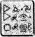

HAREKÂT ODASI, POLİS PLAZA
FOALY LEP’in merkezi işlem biriminin karşısına geçmiş, son araştırmasının sonuçlarını bekliyordu. Goblin mekiğine yapılan geniş kapsamlı lazer taraması bir tam, bir de yarım parmak izi ortaya çıkarmıştı. Tam iz kendisine aitti. Foaly kullanımdan kaldırılmış tüm mekik parçalarını kendi denetlediği için bu izler kolaylıkla anlaşılabilirdi. Yarım parmak izi o haine ait olabilirdi. Bu belki LEP teknolojisi ile ilgili bilgileri, B’wa Keli e aktaran perinin kimliğini bulmaya yaramazdı ama en azından masum olanları elemeye yeterdi. Geriye kalan adları mekik-bölümüne giriş izni olanlarla karşılaştırınca, isim listesi oldukça kısalacaktı. Foaly yaptıklarından hoşnut kuyruğunu salladı. Bu dahice bir buluştu. Bu konuda alçak gönüllü olmanın bir anlamı yoktu.
Şu anda bilgisayar, kişisel dosyaların içinde yarım parmak izini tarıyordu. Foaly’nin tek yapabildiği, boşa zaman geçirip yüzey takımı ile bağlantı kurmayı beklemekti. Magma dalgaları hâlâ alçalmamıştı. Bu çok olağan dışı bir durumdu. Hem olağan dışıydı, hem de rastlantısaldı.
Tanıdık bir ses Foaly’yi kuşku dolu düşüncelerinden sıyırdı.
“Araştırma tamamlandı,” dedi bilgisayar, Foaly’nin kendi ses tonuyla. Bu kendini beğenmişliğinin bir kanıtıydı. “Üç yüz kırk altı tane elendi. Geriye kalan kırk olası sonuç.”
Kırk tane fena değildi. Kolayca sorguya çekilebilirlerdi. Retimager’i yeniden kullanma fırsatı doğmuştu. Ama seçimi daraltmanın bir başka yolu daha vardı.
Bilgisayar. Üçüncü Düzey temizlik görevlileriyle bir karşılaştırma yap. Üçüncü Düzey temizlik ekibinin maden geri dönüşüm fırınlarına giriş izinleri vardı.
“Referans verin.”
Doğru ya, bilgisayar yalnızca programlanmış olduğu perilerin ses örneklerini tanıyordu. Foaly ek bir güvenlik önlemi olarak, kendi giriş yetkisini ve öbür önemli dosyaları sentorların eski dilleri Sentorca’yı temel alarak yarattığı bir bilgisayar dilinde kodlamıştı.
Tüm sentorlar biraz paranoyaktı. Aslında haklıydılar, ne de olsa sayıları yüzden aza inmişti. İnsanlar onlarla birlikte kuzenleri olan tek boynuzlu atların da neslini tüketmeyi başarmışlardı. Yeraltında bu dili okuyabilecek yaklaşık altı sentor vardı ve bunlardan yalnızca biri, bu bilgisayar dilini çözebilirdi.
Sentorca hiç kuşkusuz en eski yazı türüydü. Ta on bin yıl öncesinden, insanların perileri avlamaya başladıkları ilk zamandan kalmaydı. Günümüze kadar gelen, edebi olarak aydınlatılmış tek Sentorca metin olan Capalla Parşömenleri’nin giriş paragrafı şöyleydi:
Ey Periler, bu uyarıyı alın dikkate,
Yeryüzünde, insan soyu başladı belirmeye.
Bu yüzden, bulunmamacasına saklanın,
Ve kendinize yeraltında evler yapın.
Sentorlar şairlikleriyle değil, zekâlarıyla ünlüydüler. Yine de Foaly bu sözcüklerin yüzyıllar önceki etkilerinden hiçbir şey kaybetmediğini hissetti.
Cudgeon odanın güvenlik camına vurdu. Aslında şu an, teknik olarak, Cudgeon’ın Harekât Merkezine alınmaması gerekirdi ama Foaly, ona bir sinyal göndererek yanma çağırmıştı. Eski-kumandana takılmadan edemiyordu. Root’un yerine, Recon’a önderlik etme girişiminin, bir felaketle sonuçlanmasının ardından, Cudgeon’ın rütbesi teğmene düşürülmüştü.
Ailesinin hatırı sayılır politik nüfuzu olmasa, silahlı kuvvetlerden bile kovulabilirdi. İşin aslı, Cudgeon farklı bir iş dalında daha başarılı olabilirdi. En azından, Foaly’nin sürekli alaylarına katlanmak zorunda kalmazdı.
İmzalamanı istediğim birkaç elektronik-form var,” dedi teğmen, Foaly’yle göz göze gelmemeye çalışarak.
“Tabii, Kumandan,” diye kıkırdadı Foaly. “Gizli planlar nasıl gidiyor? Bu öğleden sonra için planlanmış herhangi bir ayaklanma var mı?”
Yalnızca bu formları imzala, lütfen,” dedi Cudgeon, dijital kalemini ona uzatarak. Eli titriyordu.
Şaşırtıcı, diye düşündü Foaly. Bu işi bitmiş elf bozuntusu, bir zamanlar, LEP’in önde gelenlerinden biriydi.
Hayır, ben ciddiyim Cudgeon. Bu form imzalatma işinde, gerçekten de harikalar yaratıyorsun.”
Cudgeon’ın gözleri kuşku içinde kısıldı. “Teşekkür ederim, efendim.”
Foaly’nin dudaklarının kenarında bir gülümseme belirdi. “Rica ederim. Şımarmana gerek yok.”
Cudgeon elini biçimsiz alnına götürdü. İçinde eskiden kalma bir kendini beğenmişlik vardı.
“Affedersin. Hassas bir konuya değindim. Kusura bakma/’
Cudgeon’ın göz kenarında bir kıvılcım belirdi. Bu kıvılcımın Foaly’yi uyarmış olması gerekiyordu. Ama bilgisayarından gelen bir ses Foaly’nin dikkatini dağıtmıştı.
“Liste tamamlandı.”
Bana bir dakika izin ver, Kumandan. Bu önemli bir iş. Bilgisayarla ilgili bir şey, sen anlamazsın.”
Foaly plazma ekrana döndü. Teğmenin imza için biraz daha beklemesi gerekiyordu. Kuşkusuz imzalatmak istediği mekik yedek parçalarından birinin sipariş formuydu, yalnızca.
Jeton düştü. Hem de duvara çarpan bir cücenin iç çamaşırlarından daha fazla ses çıkararak. Tabii ya mekik parçaları dahili bir işti. Öç almak isteyen kindar biri vardı. Foaly’nin alnındaki her gözeneğin içinde bir ter damlası belirdi. Her şey o kadar açıktı ki.
Foaly zaten bildiği bir şeyin onayını almak için plazma ekrana baktı. Ekranda yalnızca iki isim vardı. Birincisi, Bom Arles, hemen denebilirdi. Değiştirme memuru Bom bir merkez-dalışı kazasında ölmüştü. İkinci isim, yavaşça yanıp söndü. Teğmen Briar Cudgeon. Rütbesi düşürülüp geri dönüşüm takımında çalışmaya başladığı sıralarda, Holly sancak tarafındaki eski roket motorunu kullanımdan kaldırmıştı. Parçalar yerine oturmuştu.
Foaly mesajı on saniye içinde almazsa, bilgisayarın ismi yüksek sesle söyleyeceğini biliyordu. Rasgele, sil düğmesine bastı.
"'Biliyor musun, Briar,” dedi çatlak bir sesle. Bu başındaki sorunlarla dalga geçiyorum ya. Yalnızca eğlenmek için. Benim duygularımı paylaşım tarzım bu. Aslında, tam sana göre bir merhem...”
Sentor başının arkasında soğuk ve metalik bir şeyin baskısını hissetti. Foaly bunun ne olduğunu bilecek kadar çok sayıda, ya paranı ya canını türünde film izlemişti.
“Merhemini kendine sakla, eşek herif,” diyen Cudgeon’ın sesi kulağında çınladı. “Sanırım senin de başınla ilgili sorunların olacak.”
MAYAK KİMYASAL MADDE TRENİ, KUZEY RUSYA
Artemis’in ilk hissettiği şey omuriliğinde titreşen, ritmik bir vuruş oldu. Blackrock’taki, kaplıcalardayım herhalde, diye düşündü. İrina sırtıma masaj yapıyor olmalı. Bedenimin tek ihtiyacı olan şey bu, özellikle de trendeki kargaşadan sonra... Tren!
Anlaşılan hâlâ Mayak treninin içindeydiler. Titreşim rayların bitişme noktaları üzerinde geçerken sarsılan vagondan dolayıydı. Artemis gözlerini açmaya çalıştığında, korkunç acı ve kasılmalar duyacağını sandı. Oysa kendini iyi hissettiğini fark etti. Hatta iyiden de öteydi. Daha doğrusu kendini harika hissediyordu. Bu büyü sayesinde olmalıydı. Artemis baygın yatarken, Holly kesiklerini ve yaralarını iyileştirmiş olmalıydı.
Artemis’ten başka kimse kendini bu denli iyi hissetmiyordu. Özellikle de hâlâ baygın yatan, Yüzbaşı Short. Root yaralı memurunun üzerini büyük bir paltoyla örttü.
Ah, uyanıksın, öyle mi?” dedi Artemis’e, kısacık bir bakış fırlatarak. “Tüm bu yaptıklarından sona, hâlâ nasıl uyuyabildiğim anlayamıyorum.”
“Yapmak mı? Ama ben sizi kurtardım... en azından, yardım ettim.”
Yardım ettiğin doğru, Fowl. Baygın yattığı sırada, Holly’nin büyüsünü son damlasına kadar alıp kendi kendine yardım ettin.”
Artemis inledi. Bu yere düştüklerinde olmuş olmalıydı. Bir şekilde büyünün yönünü değiştirmişti. “Sanırım neler olduğunu biliyorum. Şey oldu...”
Root parmağını ikaz edercesine salladı. “Sakın söyle
me. Büyük Artemis Fowl, hiçbir şeyi kazara yapmaz.
Artemis trenin devinimiyle mücadele edip dizlerinin üzerinde doğruldu. “Önemli bir şey olmasa gerek. Yalnızca yorgunluk, sanırım?”
Birden bire, Root’un yüzü kendininkinin yalnızca bir santim uzağındaydı. Öylesine kırmızıydı ki ısı üretebilirdi. “Önemli bir şey değil!” diye patladı kumandan. Öfkeden dile getirmek istedikleri sözcükleri bulamıyordu. “Önemli bir şey değil! Tetiğe bastığı parmağını kaybetti! Kapı parmağını koparttı. Kariyeri sona erdi. Ve hepsi senin yüzünden, Holly’nin, kanamasını durduracak yeterli büyü yoktu. Şu an gücü tamamen tükendi. Tamamen boşaldı.
“Parmağını mı kaybetti?” diye yineledi Artemis, duygusuzca.
“Tam olarak kaybetmiş sayılmaz,” dedi kumandan, parmağı havada sallayarak. “Parmak fırladığı sırada gözüme çarptı.” Root’un gözü morarmaya başlamıştı bile.
“Şimdi geri dönersek, cerrahlarınız onu yerine dikebilir, öyle değil mi?”
Root başını olumsuzca salladı. “Şimdi, eğer geri gidebilseydik. Biz ayrıldığımızdan bu yana, yeraltında büyük değişiklikler olduğunu hissediyorum. Goblinler bizi ele geçirmek için vurucu timlerini gönderdiklerine göre, yeraltında çok önemli şeyler döndüğünden emin olabilirsin.
Artemis şaşkınlık içindeydi. Holly hepsinin hayatını kurtarmıştı ve Artemis ona borcunu işte böyle ödüyordu. Aslında, doğrudan suçlanması gereken o değildi, babasını kurtarmaya çalışırken bir kaza olmuştu. Burada verilmiş bir söz vardı.
“Ne kadar süre?” diye sordu kızgın bir ses tonuyla.
“Ne?”
“Bu olay, ne kadar süre önce oldu?
Bilmiyorum. Bir dakika kadar önce.”
“Öyleyse, hâlâ zamanımız var.”
Kumandan dik oturdu. “Ne için?”
“Hâlâ parmağı kurtarabiliriz.”
Root omzundaki açık yarayı ovaladı, trenin yan tarafında yaptığı uzun yolculuktan kalma bir anıydı. “Ne ile? Ancak hipnotizma yapabilecek kadar gücüm kaldı.” Artemis gözlerini kapadı. Yoğunlaştı. “Peki ya Ayin? Bir yolu olmalı.”
Peri Halkının tüm büyüsü Toprak’tan geliyordu. Güçlerini yeniden kazanmak için belirli aralıklarla, Ayin yapmaları gerekiyordu.
Burada, Ayin nasıl yapabiliriz ki?”
Artemis aklını çalıştırdı. Geçen yıl kaçırma harekâtına hazırlanırken, Peri Kitabı’nın pek çok bölümünü ezberlemişti.
“Senin gücün topraktan gelir,
Bu güç herkese verilmez, minnettar olman gerekir. Büyülü tohumu kopart dalında,
Dolunayın, eski meşe ve sapkın suyla birleştikleri noktada.
Ve onu, bulduğun yerden göm uzağa,
Böylelikle armağanını geri vermiş olursun toprağa.”
Artemis yerde sürünerek, Holly’nin giysisini aşağı doğru çekiştirmeye başladı.
Root’un yüreği oracıkta duracak gibi oldu. “Tanrı aşkına, Çamur Çocuk, ne yapıyorsun?”
Artemis başını bile kaldırmadı. “Geçen yıl, Holly bir meşe palamudu sayesinde kaçmayı başarabilmişti.”
Bir mucize sonucu kumandan kendine hakim olmayı başardı. “Beş saniyen var, Fowl. Çabuk konuş.”
“Holly gibi bir memur, böyle bir şeyi asla unutmaz. Bu konuda bahse...”
Root iç geçirdi. “İyi fikir, Çamur Çocuk. Ama meşe palamudunun, dalından hemen kopartılması gerekir. Geçen defa, zaman durması olmasaydı, o palamut işe yaramazdı. Kullanmak için en fazla birkaç günün vardır. Foaly ile Holly’nin, mühürlü bir meşe palamudu birimi için bir öneri sunduklarını biliyorum ama Konsey önerilerini reddetti. İnançlara karşıymış.”
Bu, kumandan için uzun bir konuşma sayılırdı. Kendini ifade etmeye alışkın değildi. Ama için için ümit ediyordu. Belki de Holly bazı kurallara karşı gelmekten hoşlanırdı.
Artemis, Yüzbaşı Short’un ceketinin fermuarını açtı. Boynundaki altın zincirin ucunda iki küçük takı sallanıyordu. Biri perilerin kutsal kitabı, Kitabın bir kopyasıydı. Artemis, Holly’nin izni olmadan ona dokunursa, kitabın alev alacağını biliyordu. Ama bir şey daha vardı. İçi toprakla dolu, şeffaf plastikten bir küre.
“Bu kurallara aykırı,” dedi Root. Fazla sinirlenmemiş görünüyordu.
Holly kendine gelirmiş gibi, biraz kıpırdandı. “Hey, Yarbay. Gözünüze ne oldu?”
Artemis onu duymazdan gelip küçük küreyi vagonun döşemesine vurdu. Toprak ve meşe palamudu avuç içine düştü. “Şimdi tek yapmamız gereken, onu gömmek.”
Yarbay, Holly’yi omzuna attı. Artemis bir zamanlar işaret parmağının bulunduğu yere bakmamaya çalıştı. “Öyleyse, trenden inme zamanı geldi.”
Artemis önünden hızla geçtikleri, Kuzey Kutbu manzarasına baktı. Bu trenden inmek, kumandanın sözünü ettiği kadar kolay değildi.
Kâhya çevik bir hareketle goblin vurucu timini gözetlemekte olduğu, üst ambar ağzından aşağı atladı.
“Böylesine esnek olduğunu görmek güzel,” dedi Artemis, yavan bir sesle.
Hizmetkâr gülümsedi. “Ben de seni gördüğüme sevindim, Artemis.”
“Pekala? Yukarıda neler gördün?” diye sordu Root, tekrar bir araya gelişlerini bölercesine.
Kâhya elini genç efendisinin omuzlarına götürdü. Daha sonra da konuşabilirlerdi. “Goblinler gitti. Garip bir şey oldu. İkisi keşif uçuşu yapmak üzere alçaldılar, sonra öbürü onları arkalarından vurdu.”
Root başını salladı. “Güçlerin oyunu. Goblinler birebirlerinin baş düşmanlarıdırlar. Ama şu an tek yapmamız gereken bu trenden inmek.”
“Yaklaşık beş yüz metre sonra bir dönemeç daha var,” dedi Kâhya. “Tek şansımız bu.”
“Peki, karaya nasıl çıkacağız?” diye sordu Artemis. Kâhya sırıttı. “Karaya çıkmak, aklımdan geçenlerin yanında, oldukça hafif bir deyim gibi kalır.”
Artemis homurdandı. Tekrar koşup atlayacaklardı.
HAREKÂT ODASI
Foaly’nin beyni bir fritöze atılmış bir deniz salyangozu gibi fokurduyordu. Cudgeon’ın onu vurmadığı göz önüne alınırsa hâlâ şansı vardı. Aksi halde tek bir atışla her şey sona ererdi. Sentorların tek bir damla büyüleri bile yoktu. Sahip oldukları tek şey zekâlarıydı. Zekâları ve düşmanlarını ayak altında ezme yetenekleri. Ama Foaly, Briar’ın henüz onunla işini bitirmediğini düşünüyordu. Kendisiyle övünmekle fazlasıyla meşguldü.
“Hey, Foaly,” dedi teğmen. “Neden interkoma basmıyorsun? Bak bakalım, neler olacak.
Foaly neler olacağını tahmin edebiliyordu. Merak etme, Briar. Ani hareket yok.”
Cudgeon güldü, gerçekten mutlu görünüyordu. Briar mı? Artık önadlar mı kullanılıyor? Başının ne denli dertte olduğunun farkında mısın?”
Foaly bunun yeni yeni farkına varmaya başlıyordu. Renkli camın öbür tarafında, LEP teknisyenleri iki metre uzaklarındaki dramatik olaydan habersiz, köstebeği yakalamaya uğraşıyorlardı. Foaly onları görebiliyor ve duyabiliyordu ama izleme tek yönlüydü.
Tek suçlu kendisiydi. Harekât odasının, kendi paranoyak ölçütleri doğrultusunda inşa edilmesi konusunda ısrar etmişti. Oda kurşun geçirmez camlarla çevrili, titanyumdan bir küptü. Odanın içine tek bir kablo bile döşenmemişti, hatta Harekât bölümünü, dış dünyaya bağlayacak tek bir optik-lif bile yoktu.
Asla ele geçirilemezdi. Tek yapabileceğiniz, kapıyı açıp eski bir düşmana birkaç hakaret savurmaktı. Foaly inledi. Annesi sürekli ona sivri dilinin başına bir sorun açacağını söyleyip dururdu. Ama her şey kaybedilmiş değildi. Kullanmadığı birkaç hile daha vardı. Örneğin, plazma zemin gibi.
“Pekala, tüm bunlar ne demek oluyor, Cudgeon?” diye sordu sentor, toynaklarını fayansların üzerinden hafifçe kaldırarak. “Dünyaya egemen olmak istediğini söyleme bana.” Cudgeon gülümsemeyi sürdürdü. Zamanı gelmişti.
“Hemen değil. Şimdilik Yeraltı Birimleri yeterli.”
“Neden peki?”
Cudgeon’ın gözlerinde çılgınlık okunuyordu. “Neden mi? Bir de utanmadan bana nedenini mi soruyorsun? Ben Konsey’in, altın çocuğuydum! Elli yıla kalmaz yönetim kurulu başkanı olacaktım! Sonra birden bire, ortaya Artemis Fowl Olayı çıktı. Bir günde tüm ümitlerim suya düştü. Ve sonuçta sakat ve rütbesini kaybeden biri durumuna geldim! Ve hepsi de senin yüzünden, Foaly. Senin ve Root’un! Bu yüzden, yaşamımı yeniden düzene koymanın tek yolu, ikinizin de itibarınızı zedelemek. Sen, goblin saldırılarından sorumlu tutulacaksın, Julius ise onuru lekenmiş ve ölmüş olacak. Ve ödül olarak da Artemis Fowl’u alacağım. Umduğumdan da kusursuz bir plan.”
Foaly burnundan soludu. “Bir avuç Yumuşakburun silahıyla, LEP’i yenebileceğini mi sanıyorsun?”
“LEP’i yenmek mi? Bunu neden isteyeyim ki? Ben LEP’in kahramanıyım. Daha doğrusu olacağım. Sen de kötü adam olacaksın.”
“Göreceğiz, maymun suratlı,” dedi Foaly, bir düğmeye basıp yerdeki alıcıya, kızılötesi bir işaret göndererek. Saniyenin yarısı kadar bir süre içinde gizli plazma zarı ısınacaktı. Yarım saniye sonra da neutrino patlayıcısı çevreye büyük bir hızla bir plazma jölesi fışkırtıp yerle temas halinde olan herkesi en az üç duvarda sektirecekti. Yani kuramsal olarak.
Cudgeon sevinçten kıkır kıkır güldü. “Sakın söyleme. Plazma fayansların işe yaramıyor, değil mi?”
Foaly afallamıştı. Yalnızca bir an için. Sonra toynaklarını büyük bir dikkatle indirip bir başka düğmeye bastı. Bu düğme, sese duyarlı bir lazeri harekete geçiriyordu. Kural olarak, ilk konuşan mıhlanırdı. Foaly soluğunu tuttu.
“Plazma fayansları yok,” diye sürdürdü konuşmasını Cudgeon. “Sese duyarlı lazer de yok. Bu kez gerçekten büyük bir hata yaptın, Foaly. Şaşırdığımı söyleyemem. İçindeki eşeğin, gün gelip ortaya çıkacağından emindim.” Teğmen bir döner sandalyeye oturup ayaklarını bilgisayar masasına uzattı. “Hâlâ anlayamadın mı?”
Foaly düşündü. Bunu kim yapmış olabilirdi acaba? Onu kendi oyununda yenmeyi başaran kimdi? Cudgeon olamazdı, bu kesin. Ancak teknik servisteki bir budala olabilirdi, belki. Yo, Sentorca kodu kırmayı başarabilecek ve odanın güvenlik sistemini etkisiz duruma getirebilecek tek bir kişi vardı.
Opal Koboi,” diye soludu Foaly.
Cudgeon, Foaly’nin başını okşadı. “Doğru. Performans artırımı sırasında, Opal buralara casus kameralar yerleştirdi. Birkaç belgeyi kameralara bakıp çevirme inceliğini gösterdikten sonra, kodu kırıp ufak tefek programlar yazmak kolay işti. Komik olan, masrafları Konsey’in karşılamış olması. Opal casus kameraları bile onlara fatura etti. Şu an, B’wa Keli şehre bir saldırı düzenlemek üzere. LEP silahlan ve iletişim sistemleri çalışmıyor; en güzeli de sevgili at dostum, bundan senin sorumlu tutulacak olman. Ne de olsa, krizin tam ortasında, kendini Harekât odasına kilitledin.”
“Buna kimse inanmaz!” diye karşı çıktı Foaly.
“Ah, evet, inanacaklardır, özellikle de DNA topları dahil, tüm LEP silahlarını devre dışı bıraktığında.” “Bunu asla yapmayacağım.”
Cudgeon mat-siyah bir uza’ tan kumandayı parmaklarının arasında çevirdi. “Korkarım, artık bu sana bağlı değil. Opal, senin küçük harekâtım bir kenara koyup tüm sistemi bu güzeller güzeline bağladı.”
Foaly yutkundu. “Yani demek istiyorsun ki..?
“Doğru,” dedi Cudgeon. “Bu düğmeye basmazsam, hiçbir şey çalışmaz.”
Cudgeon düğmeye bastı. Ve bir perinin tepkilerine sahip olmasına karşın, Foaly bile, plazma şoku onu, özel tasarımlı döner sandalyesinden fırlatmadan önce, toynaklarını havaya kaldırmaya zaman bulamadı.
KUZEY KUTBU DAİRESİ
Kâhya herkesin birer birer Aykemerine bağlanmaları konusunda talimat verdi. Sarhoş bir yengeci andıran grup hızla esen rüzgârda hafifçe dalgalanarak, vagonun çıkış kapısına ulaşmayı başardı.
Basit bir fizik kuralı, dedi kendi kendine Artemis. Özgül ağırlığın azalması, Kutup buzlarına çarpıp parçalanmamıza engel olacak. Mantığını kullanmasına karşın, Root grubu karanlığın ortasına fırlattığında, Artemis istemeden soluğunu tuttu. Daha sonra, Artemis bu olayı hayalinde canlandırdığında, rahat bir soluk alacaktı.
Hava akımı onları demiryolu traverslerinin ilerisine, kar birikintisinin ortasına savurmuştu. Kâhya düşüşten bir saniye önce, yerçekimini önleyen kemeri etkisiz duruma getirmişti, aksi halde uzayda gezen astronotlar gibi sekerlerdi.
Kemerini ilk çözen Root olmuştu. Yerdeki karları elleriyle eşelemeye başlamıştı, ta ki parmakları alttaki yoğun buz! tabakasına değinceye kadar.
“Yararı yok,” dedi. “Buzu kıramıyorum.”
Omzunun arkasından bir tıkırtı duydu.
“Geri çekilin,” diye önerdi Kâhya, tabancasını o yöne doğrultarak.
Root minettardı, koluyla gözlerini korudu. Buz zerrecikleri insanı on beş santimlik bir çivi kadar kolayca kör edebilirdi. Kâhya dar açıklığa, dolu bir şarjör yerleştirdi ve donmuş yüzeyin içine sığ bir oyuk açtı. Sulusepken yağan kar, zaten ıslanmış olan grubu sırılsıklam etti.
Duman henüz dağılmadan, Root sonuçları gözden geçirmeye başlamıştı bile. Kâhya’yı hızlandırmak gerekiyordu -Holly’nin zamanının dolmasına saniyeler kalmıştı. Ayin’i tamamlamalıydılar. Belli bir süre geçtikten sonra doku nakli yapmanın yararı yoktu. Yapabilseler bile.
Yarbay yumuşak buz tabakalarının arasındaki çukurun içine atladı. Beyazların içinde, kahverengi bir leke vardı.
“Evet,” diye haykırdı sevinçle. “Toprak!”
Kâhya, Holly’nin titreyen bedenini deliğe doğru indirdi. Güçlü ellerin arasında, bir oyuncak bebeği andırıyordu. Ufacık ve yumuşacıktı. Root, Holly’nin parmaklarını yasa dışı meşe palamudunun çevresinde yuvarlayıp sol elini parçalanmış toprağa sapladı. Kemerinden yapıştırıcı bantı alıp Holly’nin parmağını aşağı yukarı olması gereken yere, kabaca yapıştırdı.
Elf ve iki insan, Holly’nin çevresini sarıp beklemeye koyuldular.
“İşe yaramayabilir,” diye mırıldandı Root, endişelice. “Bu saklanmış palamut olayı yeni bir şey. Şimdiye kadar hiç denenmedi. Foaly ve onun şu garip fikirleri. Ama genellikle işe yararlar. Genelde yararlar.”
Artemis elini yarbayın omzuna koydu. Aklına tek gelen şey buydu. İnsanları teselli etmek konusunda pek başarılı sayılmazdı.
Beş saniye, on saniye, hiçbir şey olmadı.
Sonra...
“Bakın!” diye bağırdı Artemis. “Bir kıvılcım.”
Tek bir mavi kıvılcım, Holly’nin kolunda tembelce gezinip damarları boyunca kıvrılıyordu. Kıvılcım, Holly’nin göğsünden geçip sivri çenesine tırmandı, sonra da iki gözünün arasından içeri girdi.
“Geri çekilin,” dedi Root. “Bir gece, Tulsa da iki dakika süren bir tedavi görmüştüm. Kahrolası, az daha koca bir mekik istasyonunu yerle bir edecekti. Dört dakika sürenini asla ne gördüm, ne de duydum.
Tam zamanında krater ağzından uzaklaştılar. Toprak’tan başka kıvılcımlar da çıktı ve yardıma en çok gereksinim duyan bölge olan Holly’nin eline doğru yöneldiler. Plastik bandı eriterek, tıpkı plazma füzeler gibi parmağının içine daldılar.
Holly hızla doğrulup kollarını bir kukla gibi salladı. Bacakları hayali düşmanlarına tekmeler savurmaya başladı. Sonra ses tellerinden, ince buz tabakalarını bile çatlatabilecek kadar yüksek perdeli, keskin bir çığlık yükseldi.
“Bu normal mi?” diye fısıldadı Artemis, sanki Holly onu duyabilirmiş gibi.
Sanırım, diye yanıtladı yarbay. “Beyin bedeni denetliyor. Bu, çizik ya da yara iyileştirmeye benzemez, sana bir şey ifade ediyorsa tabii ki.”
Holly’nin bedenindeki bütün gözeneklerden buharlar çıkmaya başladı. Bunlar tüten radyasyonun izleriydi. Holly çırpındı, tekmeler savurdu ve erimeye başlayan karların üzerine yığıldı. Bu pek hoş bir manzara değildi. Su buharlaşınca, LEP yüzbaşısını bir sis perdesi sardı. Yalnızca sol eli görülebiliyordu, parmakları çok bulanıktı.
Birden bire Holly durdu. Eli dondu ve sisin içine düşüverdi. Kutup gecesi, sessizliği bozarcasına çevreyi sardı.
Sisin içinde dizilip birbirlerine sokuldular. Artemis olanları görmek istiyordu ama bakmaya korkuyordu.
Kâhya derin bir soluk alıp sisi dağıtmaya çalıştı. Aşağısı sessiz görünüyordu. Holly’nin bedeni, bir mezar kadar hareketsiz, yerde yatıyordu.
Artemis deliğin içindeki şekle baktı. “Sanırım, uyandı...”
Holly’nin ani uyanışı sözlerini yarıda kesmişti. Yüzbaşı ayağa fırladı. Kirpiklerinden ve kumral saçlarından buz saçakları sarkıyordu. Derin nefesler aldıkça göğsü bir balon gibi şişiyordu.
Artemis bir kez olsun soğukkanlılığını bir kenara bırakıp Holly’yi omzundan kavradı. “Holly. Holly. Konuş benimle. Parmağın. İyi mi?”
Holly parmaklarını oynattı, sonra onları kıvırdı. “Sanırım, dedi ve Artemis’in iki gözünün arasına bir yumruk attı. Gafil avlanan çocuk o gün dördüncü kez bir kar yığınının içine düştü.
Holly şaşkın gözlerle kendisine bakan Kâhya ya göz kırptı. “Şimdi berabereyiz,” dedi.
Kumandan Root’un hayatta çok sayıda güzel anısı yoktu. Ama ileriki günlerde işler sarpa sardığında, bu olayı hatırlayıp kendi kendine sessizce gülecekti.
HAREKÂT ODASI
Foaly ağrılar içinde uyandı, buna alışık değildi. En son ne zaman acı çektiğini bile hatırlayamıyordu. Birkaç kez, Julius’un iğneleyici sözleri yüzünden duyguları incinmişti ama fiziksel rahatsızlık katlanamadığı bir şeydi, özellikle de kaçınılabilecekken.
Sentor, Harekât Güvenlik-odasının döşemesinin üzerinde, büro sandalyesinden arta kalanların arasında, uzanmış yatıyordu.
“Cudgeon,” diye homurdandı ve bunu, burada tekrarlanması olanaksız, iki dakikalık açık saçık sözlerle dolu bir konuşma izledi.
En sonunda tüm öfkesini dışarı vurduğunda, Foaly’nin aklı başına geldi ve plazma fayansların üzerinden kalktı. Kalçası acıyordu. Alt taraflarındaki birkaç bölge, bundan böyle tüysüz kalacaktı. Bu bir sentor için çok sevimsiz bir şeydi. Gece kulübünde tanıştığı genç kızların ilk baktıkları yer orasıydı. Zaten Foaly pek iyi bir dansçı sayılmazdı. İnanılmaz derecede sakardı.
Odanın kapısı kapalıydı. Atasözünün dediği gibi, bir gnomeun cüzdanından bile daha sıkıca kapalıydı. Foaly çıkış kodunu girdi. “Foaly. Kapılar.”
Bilgisayar sessiz kaldı.
Foaly bir kez de sözlü denedi. “Foaly. Bir iki bir geçersiz. Kapılar.”
Çıt bile yoktu. Kapana kısılmıştı. Kendi güvenlik sistemin içinde tutsaktı. Pencereler bile, Harekât odasından dış ar iyi görmesini engelleyecek biçimde karartılmıştı. Ne içeri girilebiliyordu, ne de dışarı çıkılabiliyordu. Hiçbir şey çalışmıyordu.
Şey, aslında bunu söylemek pek doğru olmazdı. Her şey çalışıyordu ama Foaly’nin değerli bilgisayarı dokunuşuna yanıt vermiyordu. Ve Foaly, merkezi işlem birimine erişim olmadan, odadan çıkmanın hiçbir yolu olmadığını çok iyi biliyordu.
Foaly başındaki alüminyum şapkayı fırlatıp ezerek bir top haline getirdi.
“Bana gerçekten çok yararın dokundu!” dedi onu çöpleri geri dönüştüren kutuya atarak. Geri dönüştürücü nesnenin kimyasal bileşenlerini çözümleyip onu uygun bir depoya yönlendirecekti.
Birden duvardaki plazma ekran açıldı. Ekranda Opal Koboi’nin kocaman yüzü belirdi. Dudaklarında Foaly’nin şimdiye kadar görmediği kadar kocaman bir gülümseme vardı. “Selam, Foaly. Uzun zamandır görüşemiyorduk. “ Foaly karşılık verdi ama onunki kadar kocaman bir gülümseme ile değil. “Opal. Seni görmek ne güzel. Annenler nasıl?” Herkes, Opal’in babasını nasıl iflas ettirdiğini biliyordu. Bu, iş çevresindeki bir efsaneydi.
“Çok iyi, teşekkürler. Cumulus House harika bir akıl hastanesi.”
Foaly içten davranmaya karar verdi. Bu sıkça kullandığı bir yöntem değildi. Ama bu kez denemekte yarar vardı.
“Opal. Tanrı aşkına, yaptığını bir düşün. Cudgeon bir deli. İstediğini elde ettikten sonra, seni bir saniye içinde harcar!”
Pixie kusursuz manikürlü parmağını salladı. “Yo, Foaly, yanılıyorsun. Briar’ın bana ihtiyacı var. Gerçekten var. Ben ve altınım olmadan, o bir hiç.”
Foaly, Opal’in gözlerinin içine baktı. Pixie söylediklerine gerçekten inanıyordu. Böylesine zeki biri nasıl böylesine aldatılabilirdi?
“Tüm bunların ne demek olduğunu biliyorum, Opal.”
“Oh, öyle mi?”
“Evet. Üniversitedeyken bilim madalyasını ben kazandığım için bana hâlâ kızgınsın.”
Koboi bir saniye süreyle soğukkanlılığını kaybetti ve yüz hatları, o kadar da kusursuzmuş gibi görünmedi.
“Bu madalya benimdi, seni kalın kafalı at. Benim kanat tasarımım, senin gülünç iris-kamerandan kat kat üstündü. Erkek olduğun için kazandın. Tek nedeni bu.” Foaly kendinden hoşnutça sırıttı. Her şeyin aleyhine olmasına karşın, kendi istediği sürece, yeraltındaki en can sıkıcı yaratık olma yeteneğini kaybetmemişti.
“Peki, ne istiyorsun, Opal? Yoksa, yalnızca okul günlerini anmak için mi aradın?”
Opal kristal bardağından büyük bir yudum aldı. “Yalnızca her şeyi izlediğimi bildirmek için aradım, Foaly. Bu yüzden hiçbir şey yapmayı deneme. Ayrıca sana, şehir merkezindeki güvenlik kameralarının görüntülerini izletmek istedim. Bu arada, izleyeceklerin canlı yayın. Briar şu an Konsey’le birlikte ve olanlardan seni suçluyor. İyi seyirler.
Opal’in yüzü kayboldu ve yerini, Haven şehir merkezinin yüksek açıdan çekilmiş bir görüntüsü aldı. Burası, Kazma’nın Patates Marketinin dışındaki turistik bir bölgeydi. Bu bölge genellikle çeşmenin önünde birbirlerinin fotoğrafını çeken Atlantisli çiftlerle dolup taşardı. Ama bugün durum farklıydı, çünkü meydan bir savaş alanına benziyordu. B’wa Keli, LEP’e savaş âçmıştı ve gözüktüğü kadarıyla bu tek yönlü bir savaştı. Goblinler Yumuşakburun silahlarıyla ateş ediyorlardı ama polis onlara ateş etmiyordu. Tek yaptıkları bulabildikleri her türlü siperin arkasına gizlenmekti. Tam anlamıyla çaresizdiler.
Foaly’nin ağzı bir karış açık kaldı. Bu bir felaketti. Ve tüm bu olanlardan kendisi sorumlu tutuluyordu. Tabii ki günah keçileri masumiyetlerini savunamasınlar diye, asla canlı bırakılmazdı. Holly’ye bir mesaj göndermesi gerekiyordu, hem de hemen, yoksa hepsi ölü birer peri olacaklardı.